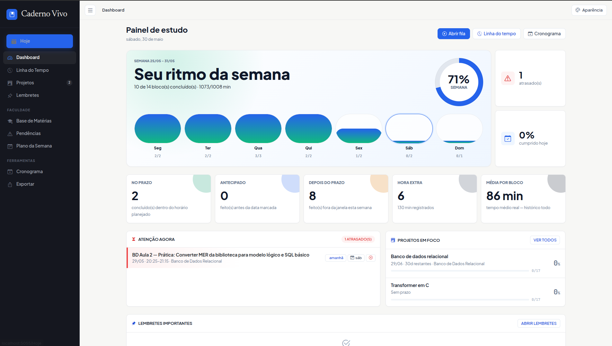
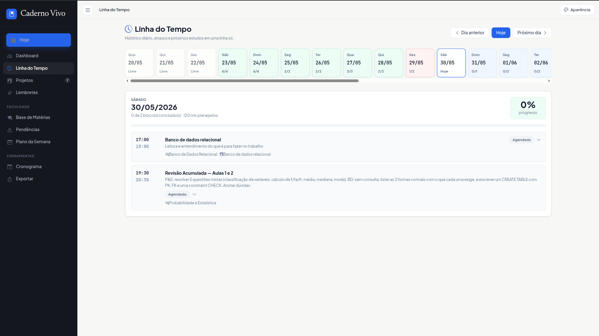
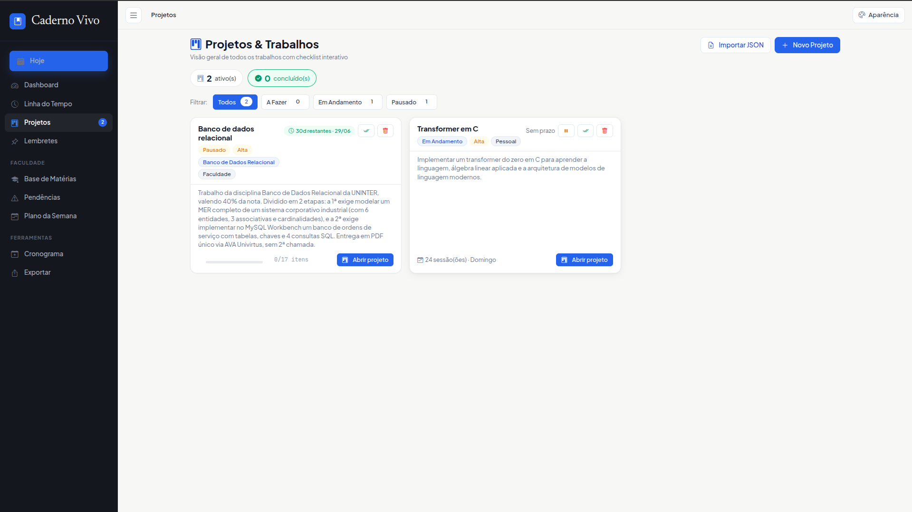
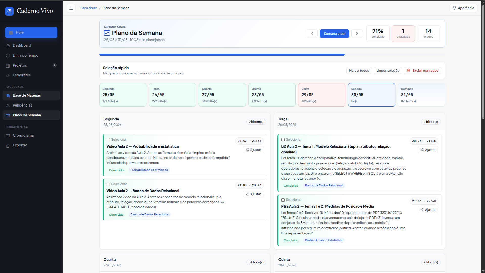
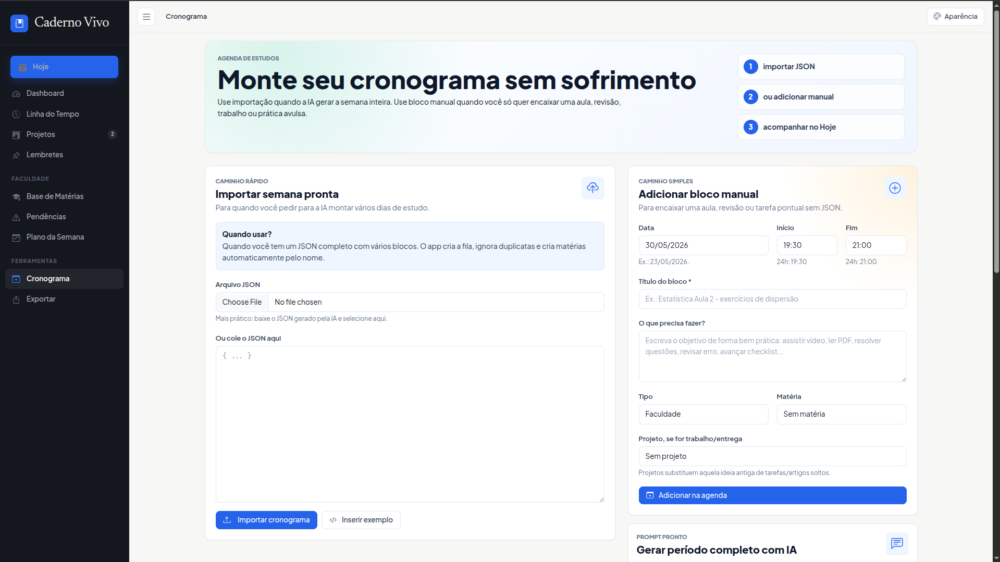
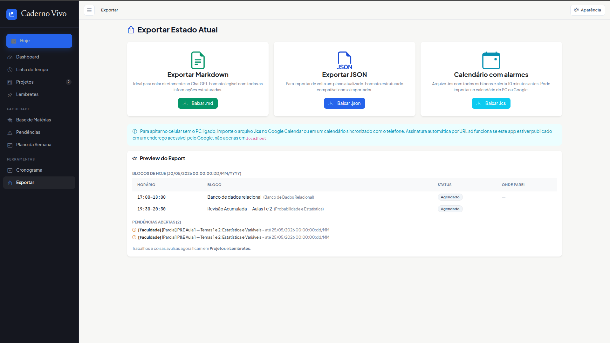

Projeto local • ASP.NET • SQLite
Projeto local • ASP.NET • SQLite
Caderno Vivo
Um app que roda na sua máquina e abre no navegador para organizar estudos de verdade. Sem nuvem, sem conta, sem assinatura.
Como surgiu
Um problema real, resolvido na velocidade que eu tinha disponível
Estudo praticamente sozinho. Não tenho ninguém para cobrar prazo, acompanhar o progresso ou lembrar o que ficou pela metade. Precisava de uma ferramenta que fizesse isso por mim, mas as opções online sempre têm algo que não encaixa: conta obrigatória, plano pago pra liberar o que importa, interface pensada pra outro fluxo.
Ao mesmo tempo, meu tempo está dedicado a outros projetos. Não tinha como parar meses para construir isso do zero com toda a atenção que um app desse tamanho exigiria. Então usei IA para acelerar. Parte do projeto foi feito por vibe coding: descrevendo o que eu precisava, iterando rápido e ajustando conforme o app tomava forma.
Isso não é algo que quero esconder. O problema que ele resolve é real, e eu uso o Caderno Vivo de verdade todo dia. A escolha foi pragmática: resolver o problema com o tempo que eu tinha.
Cada tela tem uma função clara
Painel de estudo
O dashboard mostra o ritmo da semana em um gráfico de barras por dia, com o percentual de blocos concluídos, minutos planejados versus realizados e métricas de consistência: quantos blocos foram feitos no horário certo, quantos atrasaram, quantos vieram adiantados e qual a média real por bloco no histórico completo.
Também mostra um painel de atenção agora com blocos atrasados, os projetos em foco e os lembretes fixados.

Linha do Tempo
Uma faixa de datas com navegação por dia. Você consegue voltar para ver o que foi feito semanas atrás, o status de cada bloco e o que ficou registrado ao concluir. Também serve para antecipar os próximos dias e ajustar o planejamento.
Os dias sem nenhum bloco aparecem como Livre, os com tudo concluído ganham um fundo verde discreto. Dá pra enxergar a semana inteira de uma vez.

Projetos e checklists
Cada projeto tem descrição, prazo, prioridade e status. Dentro dele você mantém um checklist interativo de itens e um roadmap com fases e marcos. Blocos de estudo podem ser criados diretamente de dentro do projeto e ficam vinculados a ele.
A tela de lista mostra quanto do checklist já foi concluído e quantas sessões de estudo estão registradas, com acesso rápido pra abrir qualquer projeto.

Plano da Semana
Visão completa da semana com todos os blocos organizados por dia. Dá pra selecionar vários blocos de uma vez e excluir em massa, o que é útil quando um plano importado precisa de ajuste antes de entrar na fila.
Cada bloco mostra horário, título, descrição e matéria vinculada. Os blocos concluídos ficam marcados em verde. É possível navegar entre semanas para revisar o histórico ou planejar as próximas.

Cronograma com IA
O app gera um prompt pronto para colar em qualquer IA. Você descreve o período, as matérias e os horários disponíveis, a IA devolve um JSON com o plano completo e o app importa tudo de uma vez, ignorando duplicatas e criando matérias automaticamente pelo nome.
Também tem a opção de adicionar blocos manualmente sem passar pelo JSON, para encaixar uma aula avulsa ou tarefa pontual de forma rápida.

Exportar para qualquer lugar
Três formatos de saída. Markdown para colar em uma IA com contexto completo dos seus estudos. JSON para reimportar um plano atualizado de volta no app. .ics para o Google Calendar ou qualquer app de calendário, com alerta de 10 minutos antes de cada bloco.
A página ainda mostra um preview do export com os blocos do dia, status e pendências abertas, antes de baixar qualquer coisa.

Como foi construído
ASP.NET Razor Pages
.NET 10 • modelo de página por rota
SQLite
Entity Framework Core 8 • banco como arquivo local
Bootstrap 5
Bootstrap Icons • frontend simples e funcional
systemd
Serviço de usuário Linux incluído no repositório
Quer rodar na sua máquina?
Só precisa do .NET SDK. O banco é criado automaticamente no primeiro dotnet run.